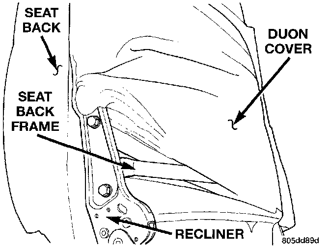

Power Recliner Adjuster and Motor
REMOVAL1. Move the power seat adjuster to the most raised and forward stop positions, if possible.
2. Remove the three screws that secure the outboard seat cushion side shield to the seat cushion frame and pull the shield away from the seat so that the power recliner adjuster lower bracket can be seen.
3. If possible, adjust the seat back with the power recliner switch far enough so that both of the two bolts in the power recliner adjuster lower bracket can be accessed.
4. Disconnect and isolate the battery negative cable.
Heated Seat Control Module Remove/Install:

5. Remove the two bolts that secure the power recliner adjuster lower bracket to the seat cushion frame.
6. Remove the inboard seat back pivot bolt.
7. Unplug the wire harness connectors, depending upon how the vehicle is equipped, as required to remove the seat back from the seat cushion.
Power Recliner Upper Bracket Remove/Install:

8. Remove the seat back cover far enough to access the two bolts that secure the power recliner adjuster upper bracket to the seat back frame.
9. Remove the power recliner adjuster and motor unit from the seat back frame.
10. Reverse the removal procedures to install. Tighten the hardware as follows:
- Inboard pivot bolt - 40 N.m (29 ft. lbs.)
- Recliner bracket bolts - 28 N.m (20 ft. lbs.).